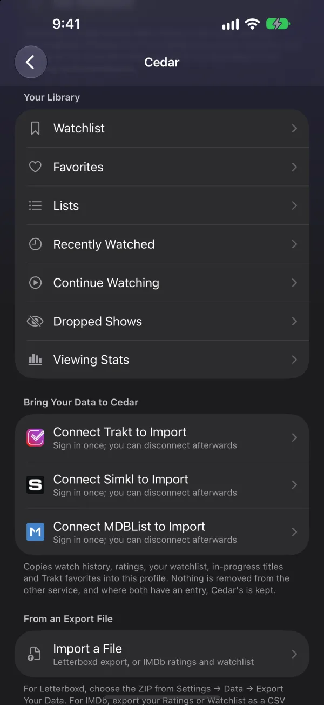
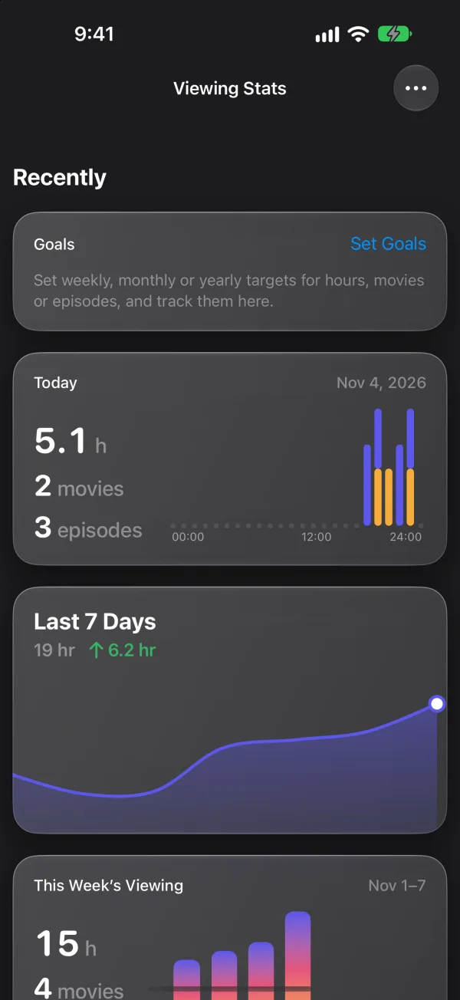

Cedar Tracking grows into a full hub, with My Taste, imports, Cedar lists, Watching Now and Dropped Shows. Viewing Stats adds insights, achievements, goals and a Year in Review. On Apple TV the Live guide scrolls more smoothly, Back keeps the channel playing, and Up and Down change channel. Multiview gains Grid, Featured and Panel layouts, Live TV plays in Picture in Picture, and a long list of reports from Discord is fixed.
Settings › Connected Services › Cedar is now a full tracking hub with My Taste, imports from media servers and watch-history files, Cedar lists, Watching Now across your devices and Dropped Shows. Experimental.

Settings › Connected Services › Cedar on iPhone.
New
Viewing Stats
Insights, achievements and goals for what you watch, plus a Year in Review. Experimental.

Settings › Connected Services › Cedar › Viewing Stats on iPhone.
Improved
Live TV guide
Scrolls more smoothly with faded edges, and Play/Pause enlarges the player.
Apple TV
New
Multiview layouts
Choose Grid, Featured or Panel, and Arrange the channels. Experimental.
New
Picture in Picture for Live TV
Keep a channel playing in a floating window while you use the rest of Cedar.
2
Live TV, sports and DVR
5 new, 3 improved
Keep Playing in Guide
New
Back opens the guide while the channel keeps playing.
Apple TV
Requested by JaxxonDellabate on Discord
Channel up and down
New
Up and Down on the remote change channel, and wrap around at the ends of the list.
Apple TV
Requested by JaxxonDellabate on Discord
Listen Only
New
Listen to a Live TV channel without video, and play Live TV from CarPlay. Experimental.
iPhone
Hide sports scores
New
Choose Show, Hide While Live or Hide All.
Requested by JaxxonDellabate on Discord
Sports Branches
Improved
Use the shared Branch editor. Showcase is sized like Feature, and the Sports Bar Poster Style is set per profile.
Requested by JaxxonDellabate on Discord
Sports channels
Improved
Guide matching for sports channels is more accurate.
Stop Recording
New
End a Cedar Server recording early and keep what was recorded. Needs Cedar Server 1.1.0.
Requested by RaidZilla on Discord
DVR schedule
Improved
The schedule sheet is redesigned.
Apple TV
Requested by RaidZilla on Discord
3
Home and posters
5 new, 5 improved
Top 10 numbering
New
Number the titles in any Branch.
Poster details
New
Posters can show N New episode counts, Time to Finish, Finale and Premiere labels, chart movement and spoiler-safe stills.
Poster menu
Improved
The long-press menu is simpler, and includes Remove from Continue Watching.
iPhone
iPad
Mac
Requested by youripeters on Discord
Continue Watching
Improved
Fills in more reliably.
Shuffle
Improved
Syncs per profile, and Apple TV gets a Sort menu.
Requested by JamminJerome on Discord
Minimalist styles
New
Minimalist Home and Detail styles. Experimental.
iPad
Apple TV
Mac
Screensaver
New
Cedar's own screensaver for Apple TV. Experimental.
Apple TV
Match Logo colour
New
The Play button can take its colour from the title's logo. It's off by default.
Hero
Improved
Trailers play only when a Tobacco Tie can play them, and swiping between titles is smoother.
Detail actions
Improved
Actions are stacked on iPhone, and Play shows the time left.
iPhone
4
Playback and subtitles
3 new, 4 improved
Search Subtitles
New
Search from the player in any language, see every result, and pick another season or episode when the match is wrong. Experimental.
Requested by mulderbog on Discord
Subtitle translation
New
Translate subtitles into your language. Experimental.
iPhone
iPad
Mac
Subtitles
Improved
More languages are found, including German, sidecar files are picked up, and more providers are searched.
Requested by youripeters on Discord
External players
Improved
Jellyfin, Emby and Plex streams open in Infuse and other external players. Experimental.
Requested by Citharae on Discord
Kids screen time
New
Set a daily viewing limit and a bedtime for Kids profiles. Experimental.
Lock icon
Improved
The player's lock icon stays hidden until you tap the screen.
iPhone
iPad
Requested by Para.192 on Discord
Playback engine
Improved
Updated, with better MKV handling and catch-up retries.
5
Sources and connections
4 new, 1 improved
Stalker portals
New
Enter a serial number and device ID for Stalker portals.
Requested by LazzyEviil on Discord
IPTV playlist icons
New
Playlists show their own icon, and titles show Playlist Availability badges.
Silo menus
New
Choose quality and audio track for Silo titles.
Soundtrack
New
A rebuilt Soundtrack section with Listen On links.
iPhone
iPad
Mac
Requested by Citharae on Discord
Bridge servers
Improved
Bridge-server streams use a single connection.
6
Fixes
17 fixed
Up Next no longer jumps to the next episode about 30 seconds in when an episode has wrong credits timing.
Continue Watching no longer disappears after Mark as Unwatched with Simkl.
Home Branches no longer stop at 20 titles.
Folders no longer show as Wide.
Jellyfin bridge-server streams no longer freeze 15 to 20 minutes in.
Choosing a source for an episode no longer freezes. Apple TV
The sports info page no longer overlaps, and its artwork is no longer zoomed. Apple TV
The episode Ratings heat map can be reached. Apple TV
DVR padding controls can be reached, and the record badge no longer lights on two channels with the same name.
The scrollbar no longer sits slightly out of place. Mac
Tvheadend DVB-T2 streams no longer drop.
Silo signs in without a proxy, and Silo Library posters appear.
Switching audio tracks no longer flashes 0:00, and Dolby Vision no longer flashes twice when changing channel or episode.
A paused channel no longer stays paused on the next channel.
Down no longer skips the first Branch, an empty Continue Watching leaves no gap, and the source picker keeps focus. Apple TV
The Live guide sidebar can be left again. Apple TV
Taps on the Home title menu always register, ratings of 0.0 are hidden, and long overlay text is no longer cut off.
7
Known issues
1 known issue
The player's episode list doesn't use season sections yet. Use the title page to jump between seasons.